help
interactive exploration of pharmit
pharmit is a web server that facilitates virtual screening: it enables users to search for small molecules based on their structural and chemical similarity to another small molecule, with the goal of identifying those that bind to a target molecule (typically a protein receptor or enzyme). The search can take as input either a small molecule, a set of pharmacophore features (which will be subsequently described in greater detail), or both a protein and a pharmacophore or a small molecule for which a putative binding pose is known. This help follows the 4pps example, which the user may choose to follow simultaneously by clicking the link, or by other search initiation methods described below.
Initiating a SearchThere are three ways to initiate a search with pharmit: from a PDB accession code, from receptor/ligand files (including both a receptor and ligand as well as a ligand by itself), or by using a pharmacophore generated from an external source and uploaded to pharmit. Each method is described in detail below.
From PDB
A structure can be obtained directly from the PDB by entering its four-character PDB identifier in the first text box after "start from PDB" as shown in the figure below. To initiate the 4pps search using this method, the user may enter "4pps" in the box. A list of possible small molecules will be generated automatically in the second box, from which the user may choose a ligand of interest (ESE, in our case). Binding site waters may be excluded entirely, used as part of the ligand as optional pharmacophore features to include in the similarity search, or used as part of the receptor to identify which pharmacophore features of the ligand are relevant to binding (for our example, we will exclude them). To proceed with the search, the user should next choose "submit".
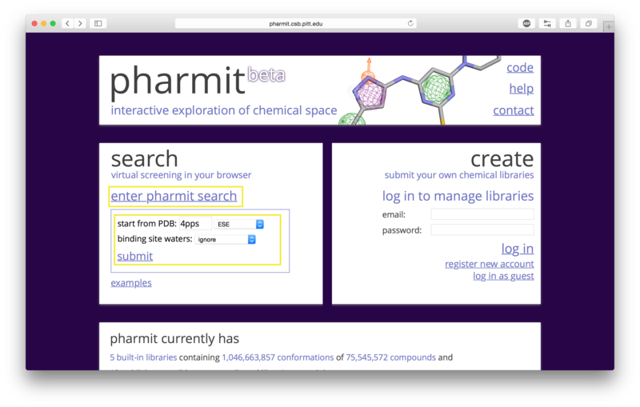
From receptor/ligand files
Alternatively the user may first choose "enter pharmit search" in
order to upload structural files. After being redirected to the
search page, choose "Load Features" to upload a small molecule
structure in sdf, pdb, mol2, or xyz format. A receptor file in any
of the same formats may optionally be provided as well; our example uses
both the ligand and receptor. To initiate the 4pps
search using this method, the user should load the attached receptor
and ligand files as the receptor and features, respectively.
These files were obtained directly from the 4pps PDB entry and are provided
as examples of possible input formats. If a
receptor is provided via the "Load Receptor" option, it should be
one for which the binding pose of the provided ligand is known, or to
which the ligand was previously docked.
pharmit will not dock the two
compounds, and since the receptor is used to identify which
pharmacophore features of the ligand are relevant to binding,
providing a pair of structures that are oriented arbitrarily will
fail to identify a relevant pharmacophore. If a ligand structure is provided without a receptor,
the query will proceed normally but the user will not be able to
energy minimize the results of queries, since this calculation depends on the presence
of a receptor. The second
image below shows an example of uploading a ligand structure without a receptor.
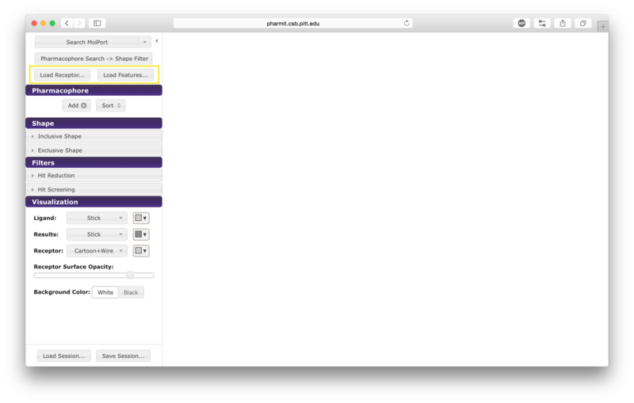
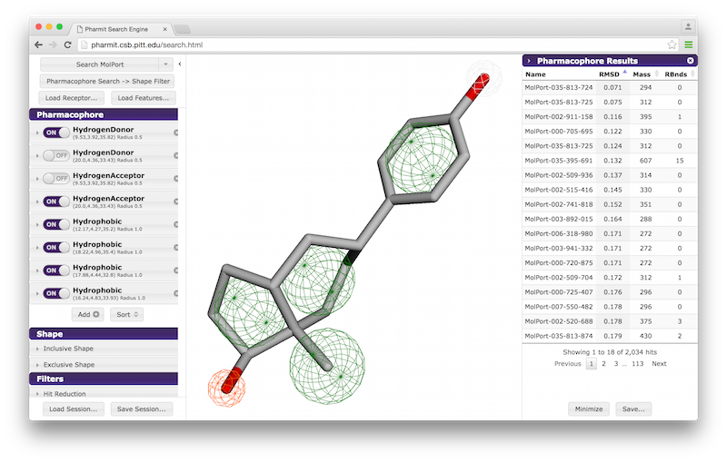
From external sources
The user may also use an external program such as MOE, LigBuilder, LigandScout, or Pharmer to generate a pharmacophore query file and then upload that file to pharmit directly. It is provided in the same manner as a ligand structure file; that is, the user should click "enter pharmit search" on the main page, than click "Load Features" to upload a query file in MOE, LigBuilder, LigandScout, or Pharmer format. A receptor file may optionally also be uploaded via the "Load Receptor" button.
VisualizationAfter the desired structures are provided, pharmit will identify all pharmacophore features present in the ligand if a ligand structure rather than a pharmacophore query file was provided. If a receptor structure was provided, it will identify which of these features are relevant to the interaction between the protein-ligand pair using distance cutoffs between interacting features and will display only these interacting features. Next, it will center the features and use a set of default visualization options to display the provided structures, including the electrostatic surface of the receptor. If the user is dissatisfied with the default visualization scheme, they may scroll down to the "Visualization" menu in the left sidebar and toggle the options as desired. In particular, if the electrostatic surface of the receptor is obscuring the pharmacophore features, receptor surface opacity may be reduced and at the lowest setting becomes entirely transparent. In the graphical display window, the left mouse button may be used to rotate the scene and the right mouse button or center wheel may be used to zoom. Clicking on spheres - both pharmacophore spheres and shape constraint spheres - toggles between a solid and wire display. In order to maximize the viewable graphical display area, the sidebar may be hidden by pressing the left-pointing arrowhead at the top right of the sidebar.
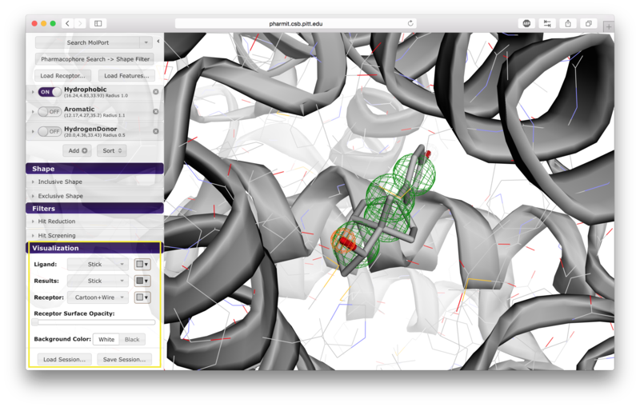
Pharmacophore Representations
Pharmacophores are used to define molecular similarity and perform
structural alignment. A pharmacophore describes the spatial arrangement of
the essential features of an interaction. Each pharmacophore query feature includes both a type and a radius. The pharmacophore type derives from the underlying chemistry of
functional groups and in the context of
pharmit
may be defined as an aromatic, hydrogen donor, hydrogen acceptor,
hydrophobic, negative ion, or positive ion. The set of
pharmacophore features chosen to represent a particular ligand and their
geometric orientation is used to identify other molecules in a
database that also possess that configuration of features. The radius
of a pharmacophore query feature determines how closely a molecule in the
database must match the configuration of the query.
To be considered similar, the pharmacophore feature points of a
molecule in the database must overlap the corresponding pharmacophore feature spheres
in the query. The likelihood of this occurring increases with
larger feature radius.
A list of pharmacophore features is provided in the "Pharmacophore" menu in
the sidebar. Pharmacophore features can be toggled "on" or "off" to include
them in or remove them from the search. Pressing the "x" to the
right of the pharmacophore removes it from the menu entirely. By
pressing the arrow to the left of a given pharmacophore, the user
can vary the type, radius, and location of a pharmacophore, as well
as optionally restrict the number of atoms associated with a
hydrophobic pharmacophore and the phi or psi angle associated with
pharmacophore features, such as hydrogen bonds, that have an associated direction.
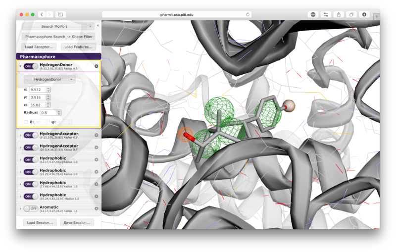
At the bottom of the "Pharmacophore" menu, there are buttons to sort the pharmacophore features and to add new features. Sorting places all active pharmacophores at the top of the list and organizes them by type. Pharmacophore features added using the "Add" button are initialized generically to hydrophobic pharmacophores of radius 1.0 located at (0,0,0), and must be set to appropriate types and locations by the user.
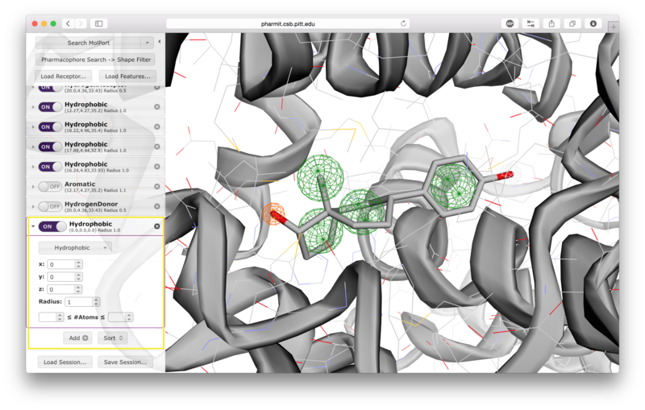
Shape Constraints
Users have the option of using shape as an additional constraint on the similarity search. The ligand's surface or a set of user-defined spheres may be used as an inclusive constraint, the receptor's surface or a set of user-defined spheres may be used as an exclusive constraint, or both inclusive and exclusive shapes may be used. Multiple spheres may be defined for both inclusive and exclusive search by choosing the "Spheres" option in the dropdown menu and pressing "Add". This will display a menu allowing the user to set the position and size of the sphere. Pressing "Add" again will enable the user to continue adding spheres. The shape constraint is applied differently depending on whether it is used to search the database prior to pharmacophore filtering or to filter results returned by a pharmacophore search. In the former case, a shape search returns molecules in the search database that contain the entire included shape and do not overlap any part of the excluded shape. In the latter case, the results of the pharmacophore search are filtered by shape to ensure that at least one heavy atom falls within the inclusive shape and no heavy atom centers fall within any exclusive shape. In either case, the results of the initial search are aligned to that search for the secondary filtering - thus for a given molecule a pose may exist that allows it to meet the secondary filter, but it will not be returned if the aligned pose resulting from the initial search does not meet those constraints. Our recommendation is that users define both inclusive and exclusive shape constraints using the ligand and receptor surfaces and use them as secondary filtering on the results of a pharmacophore search. The order of application of pharmacophore and shape constraints can be swapped using the second button from the top of the left sidebar, which switches between "Pharmacophore Search → Shape Filter" and "Shape Search → Pharmacophore Filter".
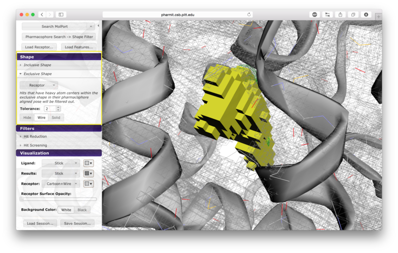
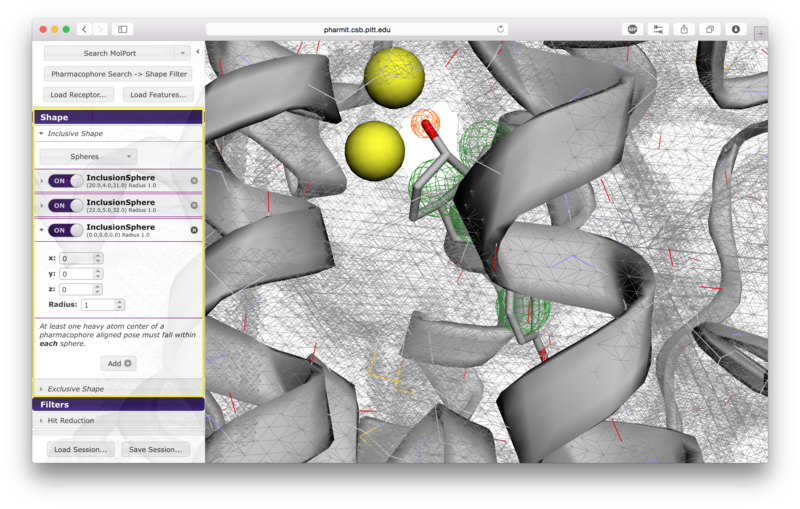
Hit Reduction and Feasibility Screening
Additional hit reduction and screening options are provided in the
"Filters" menu. The three options for hit reduction include
restricting the maximum hits returned for every configuration, for
every molecule, and overall. The maximum hits per configuration
constraint is applied greedily,
returning the first n results found without prioritizing any other
aspects of those results. The other two constraints are applied
after the results are sorted, giving priority to those of higher
rank (lower RMSD for pharmacophore searches and higher similarity scores for shape searches).
There are seven options given for hit screening. These
include constraints on molecular weight, the number of rotatable
bonds, logP (a measure of lipophilicity), polar surface area
(indicative of ability to permeate cell membranes), the number of
aromatic groups, the number of hydrogen bond acceptors, and the
number of hydrogen bond donors. Properties are computing using OpenBabel.
When the user is satisfied with the query and constraints, a
database to search should be selected by pressing the arrow next to
the first button on the left sidebar. The options include
CHEMBL20, ChemDiv, MolPort, NCI Open Chemical Repository, and
PubChem, as well as several publicly available user-contributed
libraries and any public or private libraries the user has
personally submitted using the "create" menu accessible from the
pharmit main page. Once a database is selected,
pressing the search button initiates
the search.
The two buttons at the bottom of the left sidebar enable users to
save and load
pharmit sessions. Saving a session generates a
file documenting the receptor, features, visualization state, shape
constraints, and any additional features the user specified. This
file can then be loaded to recreate the state of the interface at
the time the file was created.
When a database search is initiated, a right sidebar opens to
display the search results. This sidebar may be hidden by pressing
the right-facing arrow at the top left of the sidebar, or it may be
closed by pressing the "x" in the upper right corner. Results may
be sorted in increasing or decreasing order based on RMSD, mass, or
number of rotatable bonds; the sorting method is determined by
pressing on the name of desired sorting method, and pressing the
name again to toggle between increasing and decreasing order.
Lavender arrowheads to the right of the sorting method names
indicate whether sorting is being performed in increasing (up) or
decreasing (down) order.
There are two buttons available at the bottom of the right sidebar.
The "Save" button allows the results to be saved in their current
state; this generates a single file in sdf format that contains all
the structures that were returned by the query. The structures are
sorted in the output in the same order that they are sorted in the
sidebar. Pressing the "Minimize" button before saving allows the
user to assess the favorability of the interaction between the
protein and the ligands returned by the search. This feature energy
minimizes the results using smina, a fork of AutoDock Vina, using
the default Vina scoring function. Using this scoring function, a
more negative score indicates that the corresponding interaction is
more favorable according to the scoring function's model of
protein-ligand interaction; thus large positive scores indicate
unfavorable interactions, and large negative scores indicate more
favorable interactions. If the user chooses to minimize the
results, they may be sorted by score or RMSD of the minimized pose
from the starting pose (which was aligned to the query) by pressing
the name of the sorting method. Additional filters may also be
applied by setting values for maximum score, maximum minimized
RMSD, and requesting that only one pose be retained for each
conformer. Once the filters have been set as desired, the user
should press "Apply" to enforce them. Pressing "Save" after
minimizing the results generates a single sdf file containing the
minimized structures that includes their minimized scores; it is
often useful to rank the structures in order of increasing score so
that the best results can be
reviewed first. We additionally recommend that results be filtered by mRMSD (e.g. 2Å) to eliminate poses with significant deviations from the original query.
Users may submit databases to be used for searches using the "create" area on the main page.
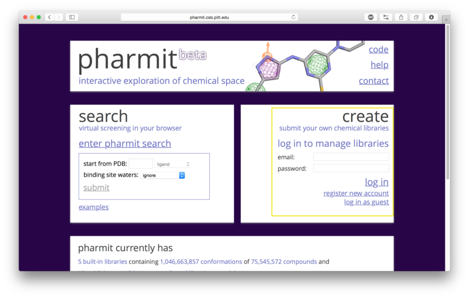
pharmit is completely open-source with all the code
required to setup and host the web application available
through SourceForge.
pharmit integrates several software packages actively developed by David
Koes and his research group, including Pharmer, an efficient
molecular search algorithm based on pharmacophores;
smina, a fork
of AutoDock Vina that performs pose scoring, small molecule
docking, and structural minimization and permits custom scoring
function development;
ShapeDB, software that performs a similarity
search based on molecular shape; and
3Dmol.js, a highly optimized
molecular visualization
package utilizing WebGL.
For additional help with pharmit please post to the discussion board or
contact us directly.
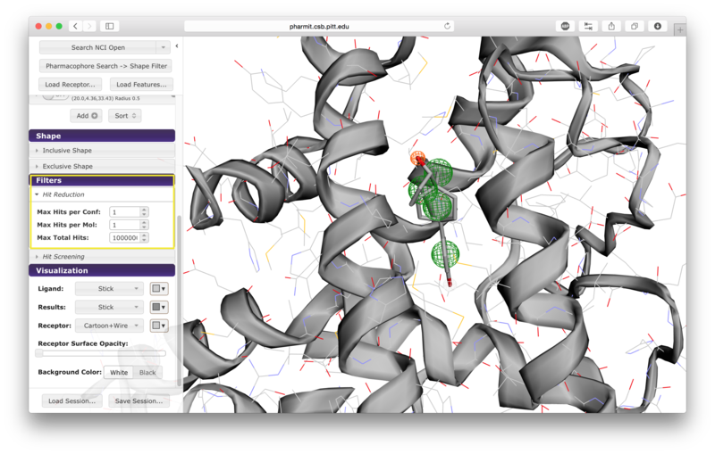
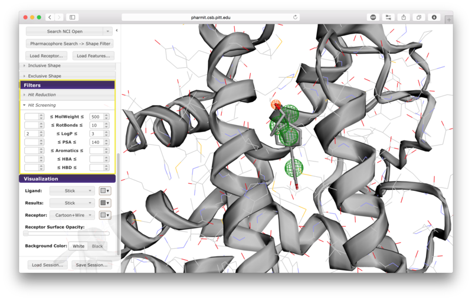
Database Selection
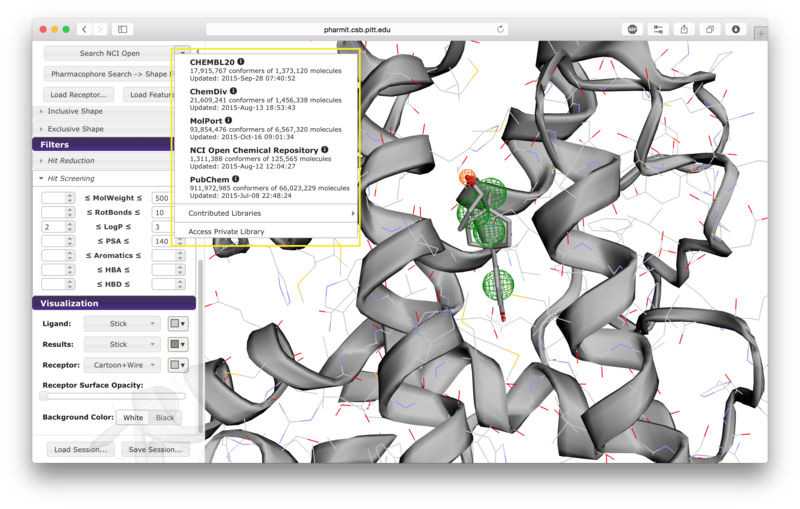
Saving and Loading Sessions
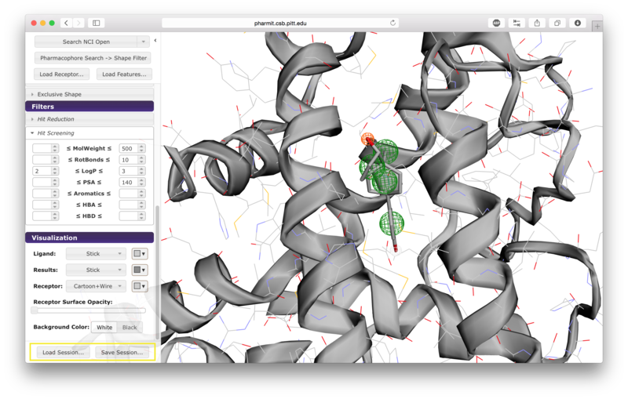
Managing Search Results
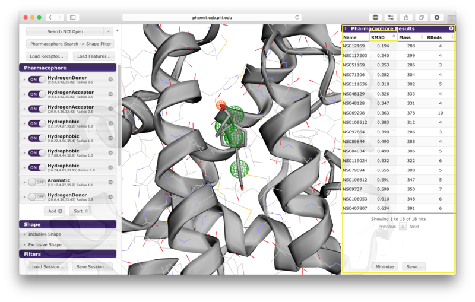
The query aligned pose may be visualized by clicking on the corresponding row in the results panel.
Hovering over a row reveals alternative identifiers for the compounds in other databases hosted by pharmit such as PubChem. A selected compound has the option of initiating a new query using the compound as the query ligand.
Saving and Minimizing Results

User-submitted Databases
If a user chooses to proceed as a guest, no private databases may
be submitted and public databases the user submits have a maximum
size of 10,000 conformers. If the user creates an account and logs
in, the user may create one private database with at most 1,000,000
conformers and public databases the user submits may have at most
10,000,000 conformers. The database files should be in SMILES or
sdf format. Conformers will be automatically generated from SMILES
strings, but the structures contained in the sdf files will be used
directly and should therefore be created using a high quality conformer generator.
File
sizes are capped at 200MB, so submitting a compressed file is
recommended. The number of permitted conformers in a database may
be extended by emailing a short justification to
dkoes@pitt.edu.
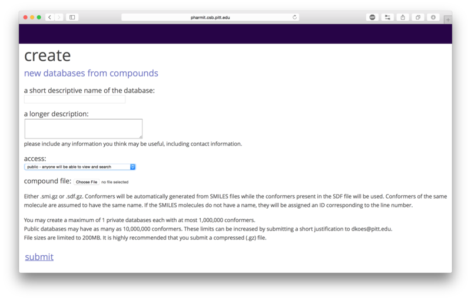
Related Software
Additional Help